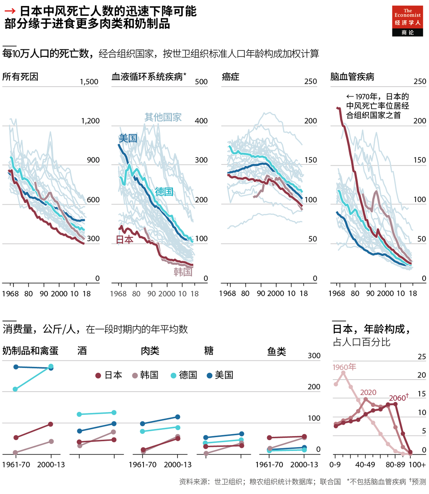

2021-02-09T06:58:01+00:00
Nutrition and health
营养与健康
營養與健康
The meat spot
加一点肉
加一點肉
The Japanese may owe some of their unusual longevity to a Goldilocks diet
日本人突出的寿命可能部分源于一种“正正好”的肉食习惯
日本人突出的壽命可能部分源於一種“正正好”的肉食習慣
TANAKA KANE is one of humanity’s great outliers. On January 2nd she became the third person ever to turn 118, according to the Gerontology Research Group, a team of academics. She is also the first citizen of Japan to reach 118—but is unlikely to be the last. The country has the world’s longest life expectancy, and 80,000 centenarians.
田中力子可是一个非常不普通的人。根据学术团体老年学研究组织（Gerontology Research Group）的数据，1月2日，她成为全球迄今为止第三个年满118岁的人。她也是日本第一个年满118岁的公民——但不太可能是最后一个。日本是世界上平均寿命最长的国家，目前有八万名百岁老人。
田中力子可是一個非常不普通的人。根據學術團體老年學研究組織（Gerontology Research Group）的數據，1月2日，她成為全球迄今為止第三個年滿118歲的人。她也是日本第一個年滿118歲的公民——但不太可能是最後一個。日本是世界上平均壽命最長的國家，目前有八萬名百歲老人。
Mrs Tanaka is an outlier for another reason, too. She claims to love chocolate and fizzy drinks, setting her apart from most of her compatriots. Japan has long had one of the lowest sugar-consumption rates in the OECD, a club of mainly wealthy countries.
田中之所以不普通，还有一个原因。她声称自己喜欢巧克力和汽水，这让她和大多数日本人不同。在成员主要为富裕国家的经合组织中，日本长期以来都是糖摄入量最低的国家之一。
田中之所以不普通，還有一個原因。她聲稱自己喜歡巧克力和汽水，這讓她和大多數日本人不同。在成員主要為富裕國家的經合組織中，日本長期以來都是糖攝入量最低的國家之一。
The unusual longevity enjoyed in Japan is often credited to diet. Yet the idea that the country has extended lifespans by entirely avoiding the West’s sinful culinary delights may be too simple. In fact, recent studies imply that one key to its success may be that its people’s diets have shifted over time towards Western eating patterns.
人们常把日本人非同寻常的长寿归功于饮食。然而，认为日本人得以延年益寿是因为完全不碰西方那些让人有罪恶感的美味，可能还是过于简单了。事实上，近期的研究表明，日本成为长寿之国的其中一个关键因素可能是日本人的饮食习惯逐渐西化。
人們常把日本人非同尋常的長壽歸功於飲食。然而，認為日本人得以延年益壽是因為完全不碰西方那些讓人有罪惡感的美味，可能還是過於簡單了。事實上，近期的研究表明，日本成為長壽之國的其中一個關鍵因素可能是日本人的飲食習慣逐漸西化。
Japan was not always a longevity champion. In 1970 its age-adjusted mortality rates were average for the OECD. Although its levels of cancer and heart disease were relatively low, it also had the OECD’s highest frequency of cerebrovascular deaths, caused by blood failing to reach the brain.
日本并非从来都是长寿冠军。1970年，该国经年龄调整死亡率处于经合组织的平均水平。尽管日本的癌症和心脏病的死亡率相对较低，但它因血液无法到达大脑而引发的脑血管疾病死亡率却是经合组织中最高的。
日本並非從來都是長壽冠軍。1970年，該國經年齡調整死亡率處於經合組織的平均水平。儘管日本的癌症和心臟病的死亡率相對較低，但它因血液無法到達大腦而引發的腦血管疾病死亡率卻是經合組織中最高的。
In 1970-90, however, Japan’s cerebrovascular mortality rate fell towards the OECD average. With world-beating numbers on heart disease and fewer strokes, Japan soared up the longevity league table.
不过从1970至1990年，日本的脑血管疾病死亡率下降至接近经合组织的平均水平。加之心脏病死亡率降至世界最低以及中风减少，日本在长寿排行榜上大幅跃升。
不過從1970至1990年，日本的腦血管疾病死亡率下降至接近經合組織的平均水平。加之心臟病死亡率降至世界最低以及中風減少，日本在長壽排行榜上大幅躍升。
How did Japan overcome its cerebrovascular woes? Some of its gains simply mirror better treatments and reductions in blood pressure around the world, notes Thomas Truelsen of the University of Copenhagen.
日本是如何战胜脑血管疾病的？哥本哈根大学的托马斯·特鲁尔森（Thomas Truelsen）指出，一定程度上这只是全世界医疗进步和血压下降的一部分。
日本是如何戰勝腦血管疾病的？哥本哈根大學的托馬斯·特魯爾森（Thomas Truelsen）指出，一定程度上這只是全世界醫療進步和血壓下降的一部分。
However, another cause may be diets. Japan largely banned meat for 1,200 years, and still consumes relatively little meat and dairy. Too much of these can be damaging, since they contain saturated fatty acids, which correlate to heart disease. Studies have also tied eating lots of processed red meat to a greater risk of stroke. But too little may be unwise as well, because they provide cholesterol that may be needed for blood-vessel walls. In a study of 48,000 Britons, vegetarians were unusually resistant to heart disease, but prone to strokes.
然而，另一个原因可能是饮食。日本在1200年的时间里基本上禁止吃肉，现在肉和奶制品的消费量仍然相对很少。这些东西吃得太多可能损害健康，因为它们含有与心脏病有关联的饱和脂肪酸。还有研究表明，食用大量加工过的红肉会增加中风的风险。但吃得太少可能也不明智，因为它们提供的胆固醇可能是血管壁需要的。一项对4.8万名英国人的研究表明，素食者对心脏病有非同一般的抵抗力，却容易发生中风。
然而，另一個原因可能是飲食。日本在1200年的時間裡基本上禁止吃肉，現在肉和奶製品的消費量仍然相對很少。這些東西吃得太多可能損害健康，因為它們含有與心臟病有關聯的飽和脂肪酸。還有研究表明，食用大量加工過的紅肉會增加中風的風險。但吃得太少可能也不明智，因為它們提供的膽固醇可能是血管壁需要的。一項對4.8萬名英國人的研究表明，素食者對心臟病有非同一般的抵抗力，卻容易發生中風。
In theory, a dearth of animal-based food could have contributed to Japan’s historical cerebrovascular mortality. In 1960-2013, as the country’s deaths from strokes tumbled, its annual meat intake rose from near zero to 52kg per person (45% of America’s level). Tsugane Shoichiro of the National Cancer Centre in Tokyo says that his compatriots may need meat and dairy to keep their blood vessels robust—though not so much that those vessels get clogged.
理论上，动物性食品摄入不足可能是日本历史上脑血管疾病死亡高发的原因之一。1960至2013年，日本中风死亡人数大幅下降，而期间它每年的肉类摄入量从接近零上升到人均52公斤（是美国的45%）。东京国家癌症中心（National Cancer Centre）的津金昌一郎表示，要保持血管强健，日本人可能需要肉类和奶制品——不过不要多到让血管阻塞的程度。
理論上，動物性食品攝入不足可能是日本歷史上腦血管疾病死亡高發的原因之一。1960至2013年，日本中風死亡人數大幅下降，而期間它每年的肉類攝入量從接近零上升到人均52公斤（是美國的45%）。東京國家癌症中心（National Cancer Centre）的津金昌一郎表示，要保持血管強健，日本人可能需要肉類和奶製品——不過不要多到讓血管阻塞的程度。
Some empirical evidence supports this view. One paper from the 1990s found that the parts of Japan where diets had changed most also had the biggest drops in cerebrovascular mortality. Another study, which tracked 80,000 Japanese people in 1995-2009, showed that strokes were most common among those who ate the least chops and cream. Although Japan’s decline in cerebrovascular deaths could stem entirely from other causes, these data suggest that nutritional shifts may have helped.
这个观点得到了一些实证的支持。上世纪90年代的一篇论文发现，在日本饮食习惯变化最大的地区，脑血管疾病死亡率的降幅也最大。另一项在1995至2009年追踪八万日本人的研究表明，在排骨和奶油吃得最少的人群中中风最多发。尽管日本脑血管疾病死亡率的下降可能是完全缘于其他原因，但这些数据表明营养摄入的改变可能有所助益。
這個觀點得到了一些實證的支持。上世紀90年代的一篇論文發現，在日本飲食習慣變化最大的地區，腦血管疾病死亡率的降幅也最大。另一項在1995至2009年追蹤八萬日本人的研究表明，在排骨和奶油吃得最少的人群中中風最多發。儘管日本腦血管疾病死亡率的下降可能是完全緣於其他原因，但這些數據表明營養攝入的改變可能有所助益。
The unhappy irony is that Japan’s health gains, paired with a low birth rate, threaten its economy. By 2060, 40% of Japanese could be 60 or older. That would yield more birthday cakes with 118 candles—and fewer great-grandchildren to blow them out. ■
令人遗憾的讽刺是，日本人健康水平的提高，和低出生率一起，对本国经济构成了威胁。到2060年，日本60岁及以上的人口将占到40%。如此就会出现更多插着118根蜡烛的生日蛋糕，却不再有那么多曾孙一起把这些蜡烛吹灭了。
令人遺憾的諷刺是，日本人健康水平的提高，和低出生率一起，對本國經濟構成了威脅。到2060年，日本60歲及以上的人口將佔到40%。如此就會出現更多插着118根蠟燭的生日蛋糕，卻不再有那麼多曾孫一起把這些蠟燭吹滅了。